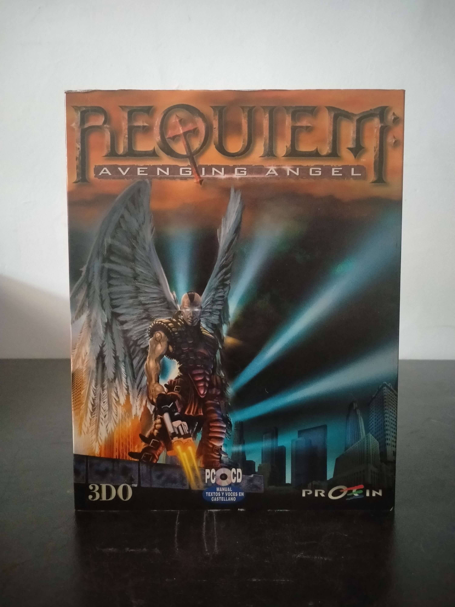

Ficha #000122
Requiem: Avenging Angel
Requiem: Avenging Angel es un shooter en primera persona desarrollado por Cyclone Studios y publicado por The 3DO Company en 1999. Su propuesta mezcla acción futurista, imaginería bíblica y fantasía oscura: el jugador encarna a Malachi, un ángel enviado a una Tierra devastada por la guerra entre fuerzas celestiales y ángeles caídos. A diferencia de muchos FPS de finales de los noventa centrados únicamente en arsenal convencional, incorpora poderes angelicales como posesión, manipulación de enemigos, ataques sobrenaturales y habilidades defensivas, combinándolos con armas de fuego y combates de ritmo rápido. La edición española distribuida por Proein destaca por indicar manual, textos y voces en castellano, además de soporte para juego multijugador en red local e Internet. Es una pieza representativa del periodo de transición del FPS de PC hacia motores 3D más ambiciosos, ambientaciones híbridas y producciones localizadas para el mercado español.
- Formato
- Big Box
- Plataforma
- Win95 Win98
- Género
- Shooter en primera persona Acción Ciencia ficción Fantasía oscura
- Serie
- Todos Big Box
- Desarrollador
- Cyclone Studios
- Distribuidor
- The 3DO Company, Proein
- EAN
- 7905615009192
Contenido de la edición
- Caja Big Box
- CD-ROM en caja jewel case
- Manual de usuario
- Hoja de referencia o instalación
- Folleto publicitario de Proein
Preservación
- Protección
- No determinado
- Formato recomendado
- BIN/CUE
- Jugable en virtualización
- Sí
Preservación recomendada mediante imagen completa del CD-ROM original en BIN/CUE o ISO, documentando además manual, caja y materiales impresos asociados. Para ejecución virtual conviene usar un entorno Windows 95/98 con DirectX de época y mantener la imagen montada si la edición realiza comprobación de disco.